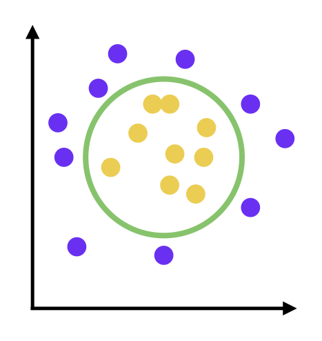
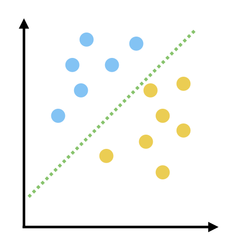

import numpy as np
import pandas as pd # Для работы с данными
import scipy.stats # При работе со статистикой
import matplotlib.pyplot as plt # Библиотека для визуализации результатов
Классификация#
Классификация –– задача предсказания отвеват из конечного множества вариантов. Линейный классификатор –– решает задачу разделеняи признакового пространства на две части, в каждом из которых надится свой класс.




 $\text{ }$
$\text{ }$